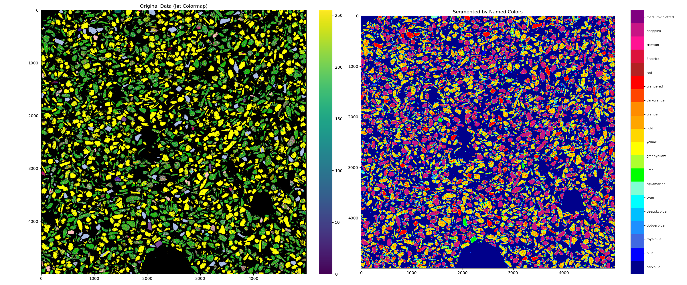
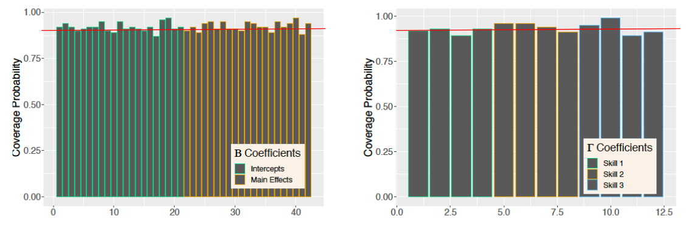
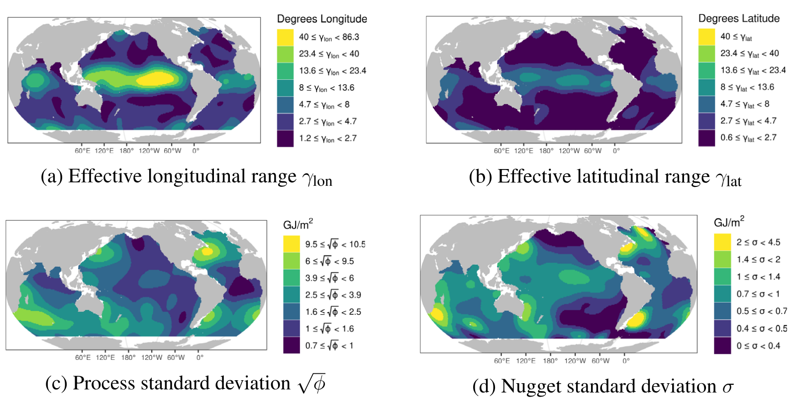

Research
Geosciences and Topological Data Analysis
Topological Data Analysis for Earth Systems Modeling

Description: Reactive fluid flow in Earth systems and subsurface energy and carbon management technologies is governed by complex, multiscale nonlinear dynamics. Predictive modeling of these systems remains challenging, however, due to significant discrepancies between observational, experimental, numerical, and in-silico data. One potential source of this mismatch stems from the critical influence of rock texture – the spatial distribution of minerals dictating fluid-mineral interactions along flow paths. Statistically characterizing texture in multi-mineralic rocks is especially difficult, typically relying on manual methods even for 2D images. This study introduces a novel, computationally efficient framework combining Topological Data Analysis (TDA) and Bayesian statistics for multi-scale spatial texture characterization at the pixel level. Utilizing TDA, we quantify the scale and topology of mineral connectivity across all spatial resolutions within an image, generating rotation- and translation-invariant persistence diagrams that capture the global texture pattern. We then apply Bayesian models to statistically characterize the geometric properties (e.g., area, perimeter, orientation, color) of individual connected mineral components identified during this multi-scale TDA filtration (binary dilation) process. Crucially, our framework tracks how these properties evolve across scales, pinpointing the specific resolutions/scales where homogenization occurs. Overall, our integrated TDA-Bayesian approach has three key features : (1) Statistically robust, automated texture characterization on images utilizing images ranging from outcrop (m) scale to micro-analytical methods like SEM, EPMA (mm scale) ; (2) Inherent multi-scale analysis revealing the relevant averaging scales and mineral distribution relationships critical for reactive flow; and (3) Optimized numerical speed using optimized C code for enabling rapid analysis of large, pixel-scale gridded images. We demonstrate the framework’s utility on geologically realistic synthetic microstructures and natural rock thin sections, extracting a parsimonious set of multi-scale statistical features most relevant for predicting reactive flow behavior.
Work with Benjamin Roycraft, Tushar Mittal, and Padma Tanikella
DOI: To come!
Latent Variable Models for Psychometrics and Social Science Research
Bayesian Hierarchical Models for Longitudinal Cognitive Diagnostic Modeling

Description: Diagnostic classification models assume the existence of latent attribute profiles, the possession of whichincreases the probability of responding correctly to questions requiring the corresponding attributes.Through the use of longitudinally administered exams, the degree to which students are acquiring coreattributes over time can be assessed. While past approaches to longitudinal diagnostic classificationmodeling perform inference on the overall probability of acquiring particular attributes, there is particularinterest in the relationship between student progression and student covariates such as intervention effects.To address this need, we propose an integrated Bayesian model for student progression in a longitudinaldiagnostic classification modeling framework. Using Pòlya-gamma augmentation with two logistic linkfunctions, we achieve computationally efficient posterior estimation with a conditionally Gibbs sampling procedure. We show that this approach achieves accurate parameter recovery when evaluated using simulated data. We also demonstrate the method on a real-world educational testing data set.
Work with Joseph Resch, Minjeong Jeon, Hao Duan, Michael Cotterell, and Matthew Madison
DOI: https://doi.org/10.1017/psy.2025.10031
Latent Space Models for Social Network Data

Description: Classic item response models assume that all items with the same difficulty have the same response probability among all respondents with the same ability. These assumptions, however, may very well be violated in practice, and it is not straightforward to assess whether these assumptions are violated, because neither the abilities of respondents nor the difficulties of items are observed. An example is an educational assessment where unobserved heterogeneity is present, arising from unobserved variables such as cultural background and upbringing of students, the quality of mentorship and other forms of emotional and professional support received by students, and other unobserved variables that may affect response probabilities. To address such violations of assumptions, we introduce a novel latent space model which assumes that both items and respondents are embedded in an unobserved metric space, with the probability of a correct response decreasing as a function of the distance between the respondent’s and the item’s position in the latent space. The resulting latent space approach provides an interaction map that represents interactions of respondents and items, and helps derive insightful diagnostic information on items as well as respondents. In practice, such interaction maps enable teachers to detect students from underrepresented groups who need more support than other students. We provide empirical evidence to demonstrate the usefulness of the proposed latent space approach, along with simulation results.
Work with Minjeong Jeon, Ick Hoon Jin, and Michael Schweinberger
DOI: https://doi.org/10.1007/s11336-021-09762-5
Climate and Environmental Science, Spatial Statistics, and Causality
Spatio-Temporal Stochastic Interventions for Causal Inference in Climate Science

Description: While physical understanding predicts a causal relationship between greenhouse gas emissions and warming in the global climate, estimation of the exact magnitude of this causal effect is notoriously difficult to constrain. One of the reasons for this high degree of uncertainty is that the climate system’s overall sensitivity depends on how the spatial pattern of temperature changes causally affects outgoing temperature. While climate model simulations provide dynamically informed estimates, performing inference on the observations is challenging due to the lack of suitable counterfactuals and the high-dimensional nature of the global climate system. We propose to address these difficulties through the causal inference framework of stochastic interventions, where the interventions are modeled as continuous spatial Gaussian processes on the domain. Representing the interventions a spatial stochastic process allows for the causal effects to be consistently estimated from the limited observational record. Using a Bayesian framework, prior information in the form of climate model simulations is incorporated into the form of the stochastic interventions in order to relax the underlying assumptions with physical information. The robustness of the results are assessed through sensitivity analyses and validation studies using climate models.
DOI: To come!
Causal Discovery of Meteorological Dynamics in Mobile Tower Data

Description: Recent advances in causal inference use Structural Causal Modeling (SCM) to infer the direction of cause-effect relationships. Our research uses SCM to identify causal relationships in meteorological processes at the surface level, and develop visualizations for a broader audience. We studied interactions among rain, temperature, specific humidity, aerosols, and CO\(_2\). Data was obtained from the CoURAGE project, consisting of three (3) mobile stations located in the urban, rural, and bay area of Baltimore. We use 1 minute interval data for analysis of the relationship among the variables of rain events and only data that contains precipitation. For the relation with CO\(_2\), we use 30-minute intervals, separating data by daytime and nighttime. We perform a time series analysis using the Tigramite python package. With these causal tools, we perform Causal Discovery to estimate the structure of the SCM. We then use Wright’s path estimation to find the causal effects for a given SCM using the ‘do calculus’. Our findings suggest that specific humidity has a stronger causal relation with temperature and aerosols than with precipitation. Additionally, CO\(_2\) tends to have a negative relation with temperature.
Work with Chris Forest, Alondra Alvarez-Castro, and MeiLi Haan
DOI: To come!
Climate Change Detection and Attribution

Description: Regression-based optimal fingerprinting techniques for climate change detection and attribution require the estimation of the forced signal as well as the internal variability covariance matrix in order to distinguish between their influences in the observational record. While previously developed approaches have taken into account the uncertainty linked to the estimation of the forced signal, there has been less focus on uncertainty in the covariance matrix describing natural variability, despite the fact that the specification of this covariance matrix is known to meaningfully impact the results. Here we propose a Bayesian optimal fingerprinting framework using a Laplacian basis function parameterization of the covariance matrix. This parameterization, unlike traditional methods based on principal components, does not require the basis vectors themselves to be estimated from climate model data, which allows for the uncertainty in estimating the covariance structure to be propagated to the optimal fingerprinting regression parameter. We show through a CMIP6 validation study that this proposed approach achieves better-calibrated coverage rates of the true regression parameter than principal component-based approaches. When applied to HadCRUT observational data, the proposed approach detects anthropogenic warming with higher confidence levels, and with lower variability over the choice of climate models, than principal-component-based approaches.
Work with Karen McKinnon
DOI: https://doi.org/10.48550/arXiv.2208.02919
Bayesian Hierarchical Models for Ocean Heat Content Modeling

Description: The accurate quantification of changes in the heat content of the world’s oceans is crucial for our understanding of the effects of increasing greenhouse gas concentrations. The Argo program, consisting of Lagrangian floats that measure vertical temperature profiles throughout the global ocean, has provided a wealth of data from which to estimate ocean heat content. However, creating a globally consistent statistical model for ocean heat content remains challenging due to the need for a globally valid covariance model that can capture complex nonstationarity. In this paper, we develop a hierarchical Bayesian Gaussian process model that uses kernel convolutions with cylindrical distances to allow for spatial nonstationarity in all model parameters while using a Vecchia process to remain computationally feasible for large spatial datasets. Our approach can produce valid credible intervals for globally integrated quantities that would not be possible using previous approaches. These advantages are demonstrated through the application of the model to Argo data, yielding credible intervals for the spatially varying trend in ocean heat content that accounts for both the uncertainty induced from interpolation and from estimating the mean field and other parameters. Through cross-validation, we show that our model outperforms an out-of-the-box approach as well as other simpler models. The code for performing this analysis is provided as the R package BayesianOHC.